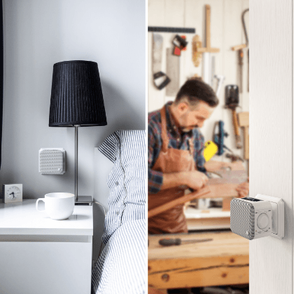

Gdy design
spotyka się
z technologią
Radio pasuje
do każdego domu
Powinno wyglądać stylowo, znakomicie brzmieć oraz być wyposażone w najnowsze technologie. I właśnie takie są radia Hama. Ciesz się muzyką radiostacji internetowych z całego świata lub regionalnych stacji DAB; streamuj muzykę ze smartfona, tabletu lub laptopa; słuchaj swojej ulubionej listy na Spotify. Z naszymi radiami i tunerem to wszystko jest w zasięgu ręki.
Design,
który imponuje
Zaokrąglone kształy i szare detale - to najnowsze trendy w wystroju wnętrz. Wykorzystujemy je w naszej najnowszej linii radioodbiorników. Ostre krawędzie to już przesłość. Eleganckie, tkaninowe elementy oraz nowoczesne zaokrąglone brzegi sprawiają, że nasze radia i tuner idealnie pasują do klimatu każdego domu.
Design w nowoczesnym
życiu domowym
Sypialnia, kuchnia, biuro, łazienka. Bez względu na to, gdzie w swoim domu chcesz słuchać muzyki – z radiami Hama znajdziesz odpowiednią muzykę w każdym pomieszczeniu.
- 


Nasze mocne strony


Multiroom
- muzyka zawsze we właściwym miejscu
Relaks przy swojej ulubionej płycie podczas kąpieli, nawet gdy odtwarzacz stoi w salonie? Muzyka słuchana z radia bez żadnych zakłóceń, pomimo tego, że jesteś w piwnicy? Teraz to możliwe! Dzięki technologii multiroom urządzenia mogą zostać połączone w grupę, a muzyka jest udostępniana pomiędzy nimi. Piosenkę odtwarzaną z głównej jednostki możesz słuchać również na innym urządzeniu z grupy – to wszystko w doskonałej jakości dźwięku z prawie całkowitym wyeliminowaniem opóźnień czasowych.
UNDOK – zarządzaj multiroomem z poziomu aplikacji
Bez względu na to czy chcesz zmienić stację, dostosować głośność, wybrać źródło muzyki lub zarządzać grupami, z aplikacją UNDOK wszystkie urządzenia multiroom mogą być sterowane centralnie i bardzo wygodnie. Zarówno pojedyncze jednostki, jak i całe grupy możesz kontrolować z poziomu smartfona lub tabletu. Więc jeśli chcesz przełączyć piosenkę lub ją podgłośnić wystarczy jedno dotknięcie ręki i zmiana nastąpi na wszystkich urządzeniach w grupie.
Pobierz aplikację UNDOK:
Android
Apple iOS

O spotify
Zabierz swoją ulubioną muzykę gdziekolwiek idziesz, czy jedziesz. Spotify umożliwia dostęp do muzyki w każdym momencie, niezależnie od urządzenia mobilnego jakie aktualnie masz w ręku.
Czym jest Spotify?
To legalny serwis muzyczny pozwalający na odsłuch ponad 20 milionów utworów w Internecie.
Połączenie Spotify
Nowy sposób słuchania muzyki w domu dzięki mobilnej aplikacji Spotify, prosto i bez wysiłku.
Pilot niepotrzebny! Wszystkimi funkcjami radia internetowego można sterować za pomocą aplikacji Smart Radio App na smartphone.
Aplikacja jest kompatybilna z większością modeli radioodbiorników cyfrowych Hama i obsługuje następujące funkcje:
Zmiana między odtwarzeniem DAB/ DAB+, radiem internetowym, serwerem UPNP lub FM
Wyszukiwanie stacji na smartphone/ tablet oraz zapisanie jej w ulubionych
Zmiana głośności i ustawień equalizera
Wyświetlanie tytułu, opisu i nazwy albumu
* Funkcje aplikacji zależne od modelu radia
Radia, które przekonują
Ciągła kontrola jakości od wzoru do finalnego produktu
Kontrola pierwszych wzorów w Niemczech i na dalekim Wschodzie
Ciągła kontrola podczas produkcji
Dwustopniowa kontrola na dalekim wschodzie i w Niemczech
Certyfikacja przez akredytowane w Niemczech laboratoria (TÜV, Bureau Veritas, ...)
Masz pytania?
Skontaktuj się z nami
Uruchomiliśmy specjalną infolinię do produktów Hama mobile. Dzwoń na poniższy numer, jeśli potrzebujesz porady lub masz inny problem, w którym możemy pomóc.

+48 799 399 847
(pn-pt, 9:00-16:00)